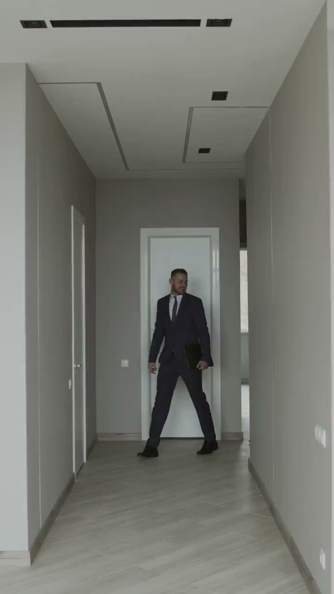
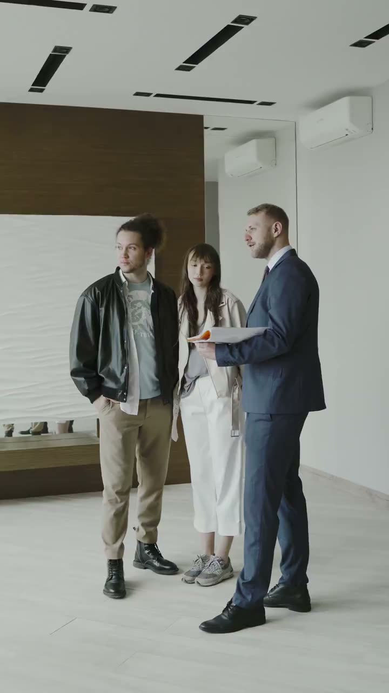

Nota simple
Sale del Registro de la Propiedad y dice quién es el dueño y qué pesa sobre la finca.
Si hay una hipoteca o un embargo sin cancelar, aparece aquí.
La pedimos reciente, no la que lleva meses en un cajón.
FIRME es una inmobiliaria. Te cuento todo lo del piso antes de que firmes, también lo malo.
Leer antes de firmarY ya no sabemos cuál es el bueno.
Todos eran «luminosos» y «con mucho potencial». Después llega el contrato, y es la firma más cara de tu vida. Lo que da miedo es equivocarte sin saberlo.
Toca una frase y te digo lo que significa. Y lo que miro por ti antes de que vayas a verlo.
¿A qué hora, y en qué mes?
Volvemos por la mañana y al caer la tarde, y miramos hacia dónde dan las ventanas.
Hay que reformarlo. Suma la obra al precio.
Te ayudo a pedir un presupuesto de reforma antes de hacer una oferta, no después.
Ven un viernes de noche, con la ventana abierta.
Una visita a las once de la mañana no te cuenta cómo suena el dormitorio.
Enséñame los recibos.
Comunidad e IBI, en papel. También si hay obras aprobadas que todavía no se han cobrado.
Hoy no hay ascensor, y puede que lo pagues tú.
Leo las actas de la comunidad: si hay una derrama aprobada, lo sabrás antes de la oferta.
Puede que tenga inquilino dentro.
Preguntamos por el contrato de alquiler y por su duración. Si es para vivir, cambia todo.
Abre los grifos y mira el cuadro eléctrico.
La pintura nueva lo tapa casi todo. Instalaciones, humedades y ventanas se revisan en la visita.

Te acompaño a cada visita con la lista en la mano. Miramos también lo que no sale en las fotos: el trastero, el patio, la escalera.

Si la terraza da a un bar o la cocina no tiene arreglo barato, te lo digo. El vendedor también es cliente, y por eso le pido que todo esté a la vista desde el principio.
Antes de ofertar, juntos y sin prisa: quién es el dueño, qué debe el piso y qué se ha aprobado en la comunidad.
Primero las arras, con sus plazos y lo que pierde cada parte si se echa atrás. Después, la escritura ante notario, y el notario lo eliges tú.
Te las doy en la mano. Antes repasamos el piso una última vez, para comprobar que está como lo viste, y anotamos los contadores.
Entre cajas, con una pizza. Y en tu casa.
Esto es lo que leemos antes de que firmes. Lo amarillo es lo que no me saltaría nunca.
Sale del Registro de la Propiedad y dice quién es el dueño y qué pesa sobre la finca.
Si hay una hipoteca o un embargo sin cancelar, aparece aquí.
La pedimos reciente, no la que lleva meses en un cajón.
Lo firma un técnico y el vendedor tiene que dártelo para vender.
Una letra baja suele traer facturas altas cada invierno.
Lo comparamos con las ventanas y la calefacción que hemos visto.
El administrador de fincas confirma si el piso está al día de pagos.
También preguntamos por las derramas aprobadas y las obras que vienen.
Las actas de las últimas juntas cuentan mucho más que el anuncio.
Dice lo que pagarás al ayuntamiento cada año y si el vendedor lo ha pagado.
Que los datos del recibo coincidan con los de la nota simple.
Una diferencia de metros o de referencia hay que aclararla antes.
Acredita que el piso cumple las condiciones para vivir en él.
Cada comunidad autónoma pide cosas distintas: lo comprobamos en la tuya.
Sin ella pueden darte problemas al dar de alta los suministros.
Es el compromiso previo a la escritura: señal, plazo y qué pasa si alguien se echa atrás.
Lee qué tipo de arras firmas. No todas te dejan salir igual.
Te recomiendo que lo revise un abogado de tu confianza.
Esta es la regla de FIRME. Marca lo que ya tienes claro. Cuando esté todo, la línea de firma se abre.
Antes de firmar, confirmo que:
Aún no. Te faltan 5.
Esta firma se queda en tu pantalla. No se guarda ni se envía a ningún sitio.
Tus llaves.
Has firmado sabiendo lo que firmabas. Lo demás es cuestión de cajas.
El spot de FIRME cuenta lo mismo desde el lado de quien ha visto once pisos.
El encargo y lo que cobra cada parte se ponen por escrito el primer día. Te lo digo antes de enseñarte nada, para que sepas de qué lado está cada cosa que te cuento.
Sí. Si te lo callo, lo descubres en la primera semana y a mí ya no me recomiendas a nadie. Mi trabajo depende de lo que cuentes de mí después.
Ojalá lo hagas. Te facilito la visita y los papeles para que puedan revisar lo que necesiten.
Antes de las arras no pasa nada: seguimos buscando. Después, depende de lo firmado, y por eso lo leemos juntos antes de firmarlo.
Como comprador puedes elegirla tú. Te explico cómo funciona y te acompaño el día de la firma.
No. Yo te ayudo a leer y te digo qué preguntar. Para lo legal de tu caso, mejor un profesional que lo firme.
FIRME no existe. Es una marca de demostración: el nombre, el logo, el spot y esta web los he hecho yo, Esteban, para enseñar cómo construyo una marca. El servicio y sus condiciones son un ejemplo.
Hablamos